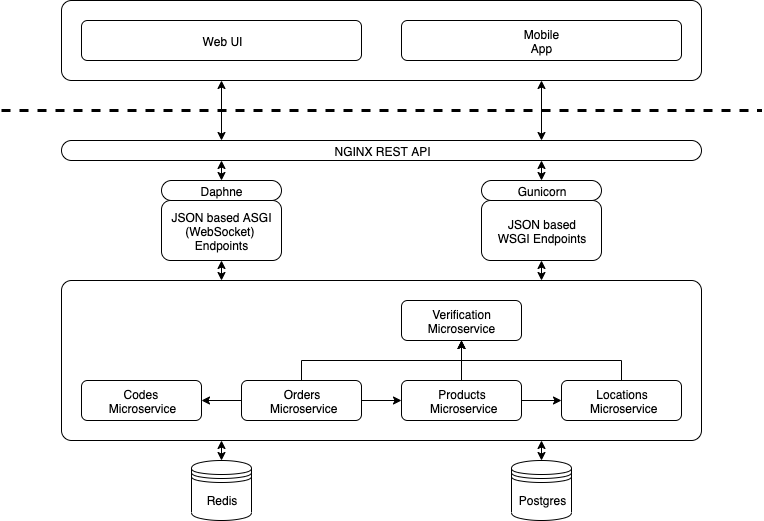

Today's Presentation Outline
- Recap
- Context in our Scenario
- Adaption Concepts
- Architectural Decisions and Technology Stack
ordered.online
You visit a location and order online.
Context in our Scenario (1/2)
| Contextual Dimension | Contextual Aspects | Implementation |
|---|---|---|
| Personal Context | Users should only give their personal information, if necessary. | Request login only if the user is a location representative. |
| Social Context | Multiple clients should be able to order in the same session, e.g. if they come together. | Join clients together in a WebSocket order session. |
Context in our Scenario (2/2)
| Contextual Dimension | Contextual Aspects | Implementation |
|---|---|---|
| Operational Context | There are two roles: the location representative and the customer. Both have different use cases but are interleaved operationally. | Implement a separation between client and manager, which interleaves both where necessary, for example order placement. |
| Technical Context | Devices: browser (manager) and app (client), potentially low bandwidth. Devices can run multiple operating systems (preferably Android or iOS). | Sense available network bandwidth and adapt application data accordingly. Notify the user when a network outage occurs. |
Adaption of Application Data - Reduction
-
We should not transmit all server side data (i.e., locations and products) to the client.
Adaption Concept: reduce the amount of data with attribute based server side query filtering.
Adaption Concept: Use lazy loading to reduce number of items send to client apps at once.
Adaption of Application Data - Coding
-
We want to expose as few information about the backend's functionality as possible.
Adaption Concept: transform data from a server side internal representation to the compact JSON format. JSON gives use smaller message size than other representations.
Adaption of Communication - Error handling
-
After creating an order, the respective data has to be stored persistently.
Adaption Concept: Store data persistent in database on server side where we can ensure a stable environment. -
Requests can fail, for example, when a login token expires and the user accesses a login restricted endpoint.
Adaption Concept: use HTTP response codes and reason identifiers and handle failed actions respectively.
Adaption of Communication - Message Delivery
-
During a network outage, certain actions will not be forwarded to the server.
Adaption Concept: use queuing and forward the actions when possible. Regarding the UX, the user should get an indicator of the network outage, though.
Adaption of Data Transmission - Prioritizing of Data
-
Different services (codes, products, orders, ...) will have different workloads.
Adaption Concept: prioritize frequently used services. Use a load balancer and dynamically scalable microservices.
Project Structure
Technology stack